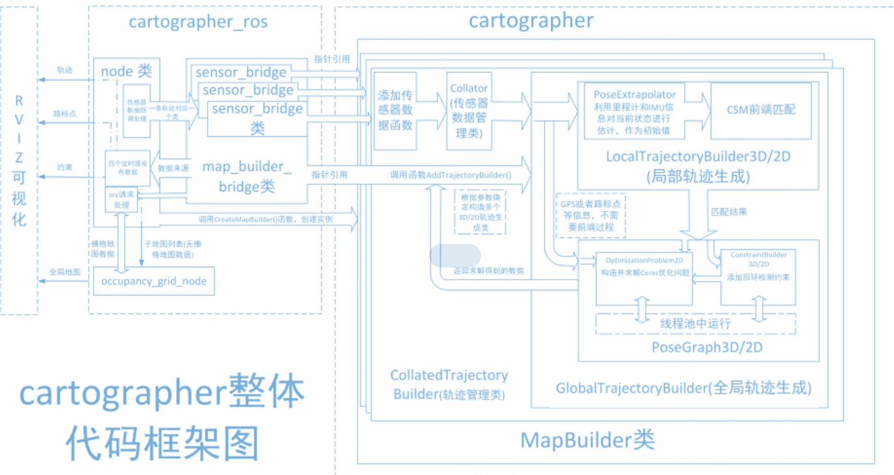
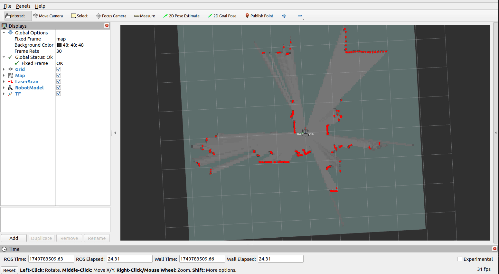
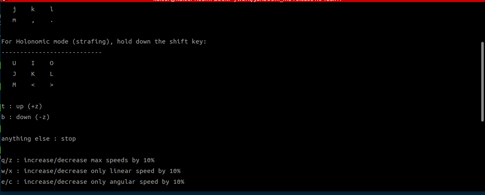
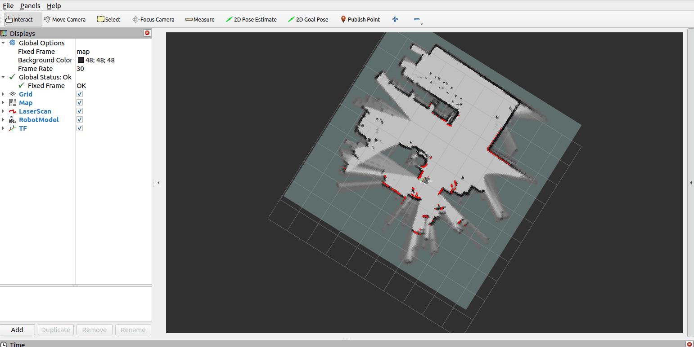
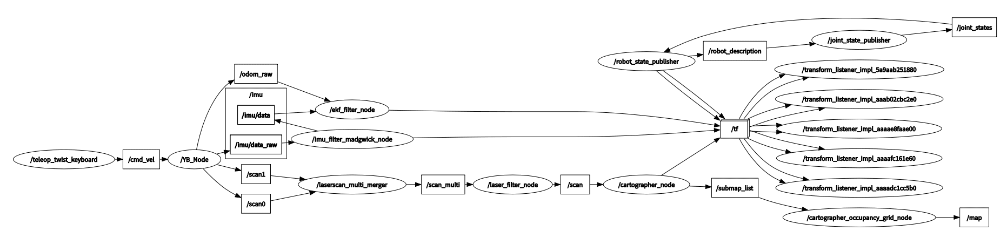
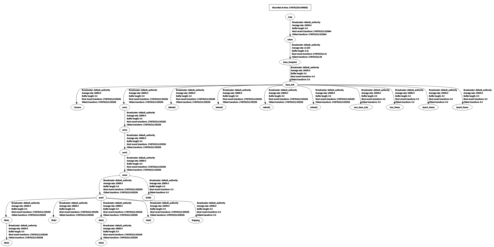

Алгоритм построения карты Cartographer-SLAM
1. Содержание урока
Изучение алгоритма построения карты Cartographer SLAM для функции SLAM-картографирования на роботе.
После запуска примера программы используйте клавиатуру или геймпад для перемещения робота, чтобы завершить построение карты, а затем сохраните карту.
2. Введение в Cartographer
2.1 Введение
Cartographer — это библиотека 2D и 3D SLAM (одновременная локализация и построение карты), с открытым исходным кодом от Google, поддерживающая систему ROS. Это алгоритм построения карты, основанный на оптимизации графа (многопоточная оптимизация на backend, задача оптимизации построена на Ceres). Он способен объединять данные от нескольких датчиков (например, лидара, IMU и камер) для одновременного вычисления положения датчика и построения карты окружающего пространства.
Исходный код Cartographer состоит в основном из трёх частей: cartographer, cartographer_ros и ceres-solver (оптимизация на backend).

Cartographer использует основной подход SLAM, то есть трёхэтапный процесс: извлечение признаков, обнаружение замыкания петли (loop closure detection) и оптимизация на backend. Определённое количество сканов лидара (LaserScan) образует подкарту (submap), а последовательность подкарт образует глобальную карту. Накопленная ошибка на коротком этапе построения подкарты из сканов лидара невелика, но на длительном этапе построения глобальной карты из подкарт накопленная ошибка становится значительной. Поэтому для коррекции положений подкарт требуется обнаружение замыкания петли. Базовой единицей обнаружения замыкания петли является подкарта, а само обнаружение использует стратегию сопоставления сканов (scan_match). Ключевое содержание Cartographer заключается в создании подкарт путём объединения данных нескольких датчиков (одометрия, IMU, LaserScan и т.д.) и реализации стратегии scan_match для обнаружения замыкания петли.

cartographer_ros
cartographer_ros работает под управлением ROS и может принимать данные различных датчиков в виде сообщений ROS. После обработки он публикует их в виде сообщений для отладки и визуализации.
2.2 Дополнительные материалы
- репозиторий на GitHub
- официальная документация
3. Подготовка
3.1 Описание содержания
В этом уроке в качестве примера используется Jetson Orin NX. Для материнских плат Raspberry Pi и Jetson-Nano необходимо открыть терминал на хост-машине, ввести команду для входа в Docker-контейнер, а затем вводить команды этого урока уже в терминале внутри контейнера. Инструкции по входу в Docker-контейнер с хост-машины см. в разделе [0. Instructions and Installation Steps] данного руководства к изделию, а именно [Entering the Car Docker] (для пользователей Jetson-Nano и Raspberry Pi 5). Для материнских плат Orin и NX достаточно просто открыть терминал и ввести команды этого урока.
3.2 Запуск агента
Примечание: перед запуском любых тестовых примеров необходимо сначала запустить агента в Docker. Если он уже запущен, повторно запускать его не нужно.
Введите команду в терминале робота:
sh start_agent.sh
Терминал выведет следующую информацию, означающую успешное подключение.
4. Запуск примера
4.1 Процесс построения карты
Обратите внимание:
- При построении карты, чем медленнее скорость (особенно скорость поворота), тем лучше результат. Высокая скорость приведёт к плохому качеству карты.
- Для контроллеров серии Jetson Nano и Raspberry Pi необходимо сначала войти в Docker-контейнер (см. [Docker Course Chapter — Entering the Robot Docker Container]).

Запустите в терминале робота команду запуска нижнеуровневых датчиков:
ros2 launch slam_mapping bringup.launch.py
Затем запустите команду построения карты:
ros2 launch slam_mapping cartographer.launch.py
Визуализацию rviz можно запустить как на стороне робота, так и на стороне виртуальной машины. Выберите один из способов. Не запускайте её одновременно на виртуальной машине и на роботе.
В качестве примера рассмотрим виртуальную машину: откройте терминал и запустите интерфейс визуализации rviz:
ros2 launch slam_view slam_view.launch.py
Команда запуска интерфейса визуализации rviz на стороне робота:
ros2 launch slam_mapping slam_view.launch.py
Откройте на виртуальной машине ещё один терминал, чтобы запустить узел управления с клавиатуры (также можно использовать игровой геймпад):
ros2 run yahboomcar_ctrl yahboom_keyboard

Кликните мышью по окну терминала, нажмите z, чтобы соответствующим образом снизить скорость, и нажимайте I, <, J, L для управления движением робота вперёд, назад, поворотом влево и поворотом вправо соответственно. Медленно перемещайте робота для завершения построения карты.

4.2 Сохранение карты
Откройте на роботе новый терминал, чтобы сохранить карту:
ros2 launch slam_mapping save_map.launch.py
Сообщение в терминале «Map saved successfully» означает, что карта успешно сохранена.
Путь сохранения карты следующий:
$HOME/M3Pro_ws/install/M3Pro_navigation/share/M3Pro_navigation/map

Одно изображение в формате PGM и один YAML-файл yahboom_map.yaml:
image: yahboom_map.pgm
mode: trinary
resolution: 0.05
origin: [-10, -10, 0]
negate: 0
occupied_thresh: 0.65
free_thresh: 0.25
Разбор параметров:
image: путь к файлу карты, может быть абсолютным или относительным.mode: этот атрибут может принимать одно из значенийtrinary,scaleилиraw. По умолчанию используется режимtrinary.resolution: разрешение карты, метры/пиксель.origin: 2D-положение (x, y, yaw) нижнего левого угла карты.yaw— поворот против часовой стрелки (yaw=0означает отсутствие поворота). В текущей системе значениеyawво многих частях может игнорироваться.negate: инвертировать ли смысл белого/чёрного, свободного/занятого (на интерпретацию порогов не влияет).occupied_thresh: пиксели с вероятностью занятости выше этого порога считаются полностью занятыми.free_thresh: пиксели с вероятностью занятости ниже этого порога считаются полностью свободными.
4.3 Сохранение карты в формате pbstream
Файл карты в формате pbstream используется для навигации с повторной локализацией (relocation navigation) и будет рассмотрен в следующих главах.
После завершения построения карты откройте новый терминал и введите команду для завершения траектории карты:
ros2 service call /finish_trajectory cartographer_ros_msgs/srv/FinishTrajectory "{trajectory_id: 0}"

Затем откройте ещё один терминал, чтобы сохранить файл карты в формате pbstream:
Для хостов Jetson Orin Nano и Jetson Orin NX команда сохранения:
ros2 service call /write_state cartographer_ros_msgs/srv/WriteState "{filename: '/home/jetson/yahboom_map.pbstream'}"
Для хостов Jetson Orin Nano и Raspberry Pi команда сохранения:
Сначала войдите в Docker:
ros2 service call /write_state cartographer_ros_msgs/srv/WriteState "{filename: '/root/yahboom_map.pbstream'}"
5. Разбор узлов
5.1 Отображение вычислительного графа узлов
ros2 run rqt_graph rqt_graph
5.2 Преобразования TF
Выполните в терминале виртуальной машины:
ros2 run rqt_tf_tree rqt_tf_tree
Изображение слишком большое. Оригинальное изображение можно посмотреть в папке этого урока.

5.3 Подробности узла Cartographer
ros2 node info /slam_gmapping
Введите указанную выше команду в терминале, чтобы посмотреть топики подписки и публикации, связанные с узлом gmapping.
/cartographer_node
Subscribers:
/parameter_events: rcl_interfaces/msg/ParameterEvent
/scan: sensor_msgs/msg/LaserScan
Publishers:
/constraint_list: visualization_msgs/msg/MarkerArray
/landmark_poses_list: visualization_msgs/msg/MarkerArray
/parameter_events: rcl_interfaces/msg/ParameterEvent
/rosout: rcl_interfaces/msg/Log
/scan_matched_points2: sensor_msgs/msg/PointCloud2
/submap_list: cartographer_ros_msgs/msg/SubmapList
/tf: tf2_msgs/msg/TFMessage
/trajectory_node_list: visualization_msgs/msg/MarkerArray
Service Servers:
/cartographer_node/describe_parameters: rcl_interfaces/srv/DescribeParameters
/cartographer_node/get_parameter_types: rcl_interfaces/srv/GetParameterTypes
/cartographer_node/get_parameters: rcl_interfaces/srv/GetParameters
/cartographer_node/list_parameters: rcl_interfaces/srv/ListParameters
/cartographer_node/set_parameters: rcl_interfaces/srv/SetParameters
/cartographer_node/set_parameters_atomically: rcl_interfaces/srv/SetParametersAtomically
/finish_trajectory: cartographer_ros_msgs/srv/FinishTrajectory
/get_trajectory_states: cartographer_ros_msgs/srv/GetTrajectoryStates
/read_metrics: cartographer_ros_msgs/srv/ReadMetrics
/start_trajectory: cartographer_ros_msgs/srv/StartTrajectory
/submap_query: cartographer_ros_msgs/srv/SubmapQuery
/tf2_frames: tf2_msgs/srv/FrameGraph
/trajectory_query: cartographer_ros_msgs/srv/TrajectoryQuery
/write_state: cartographer_ros_msgs/srv/WriteState
Service Clients:
Action Servers:
Action Clients: